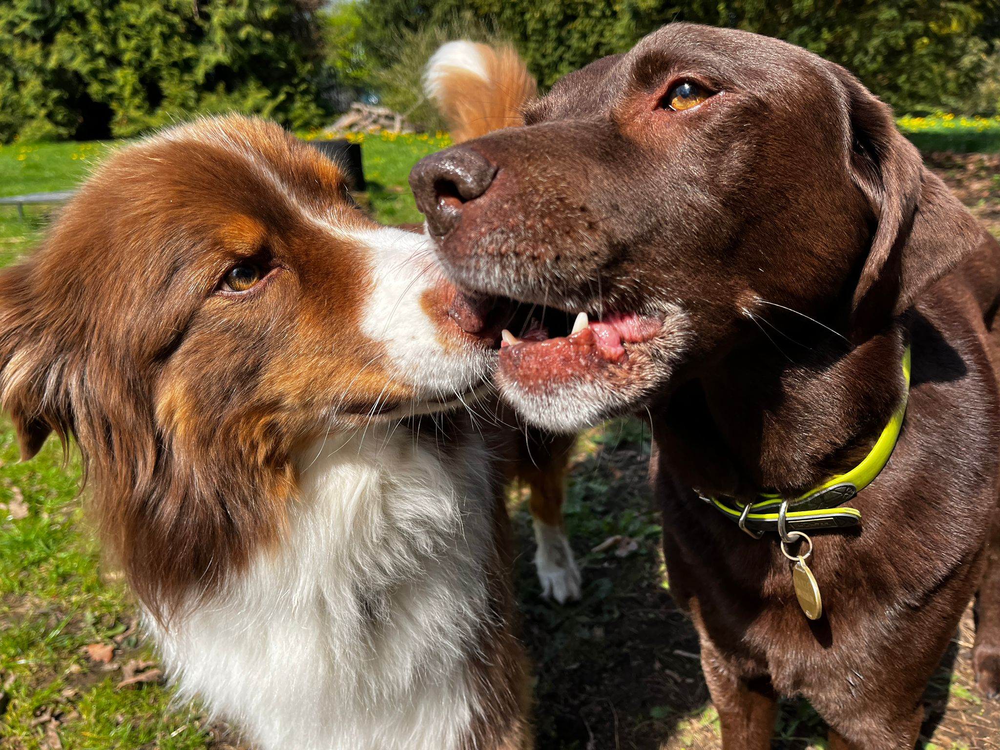
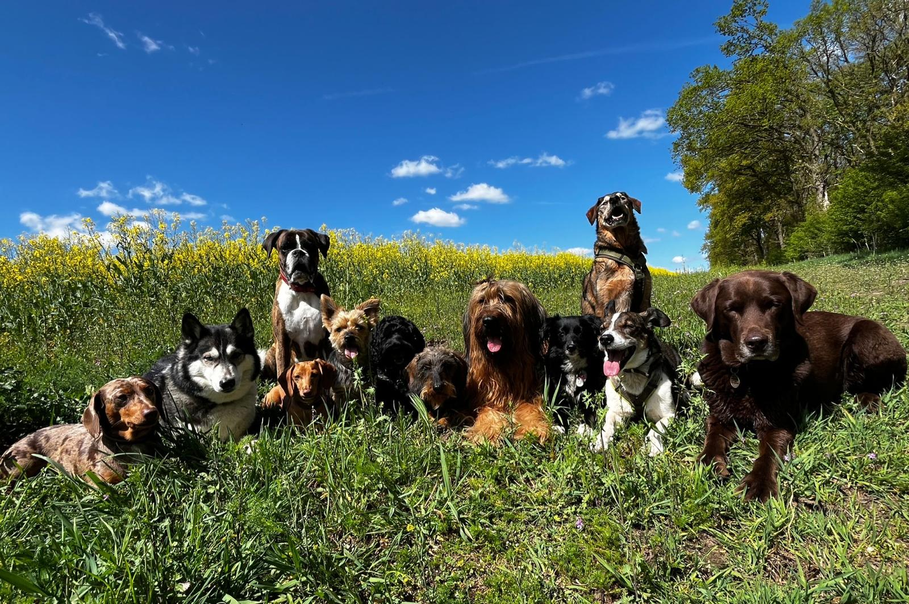
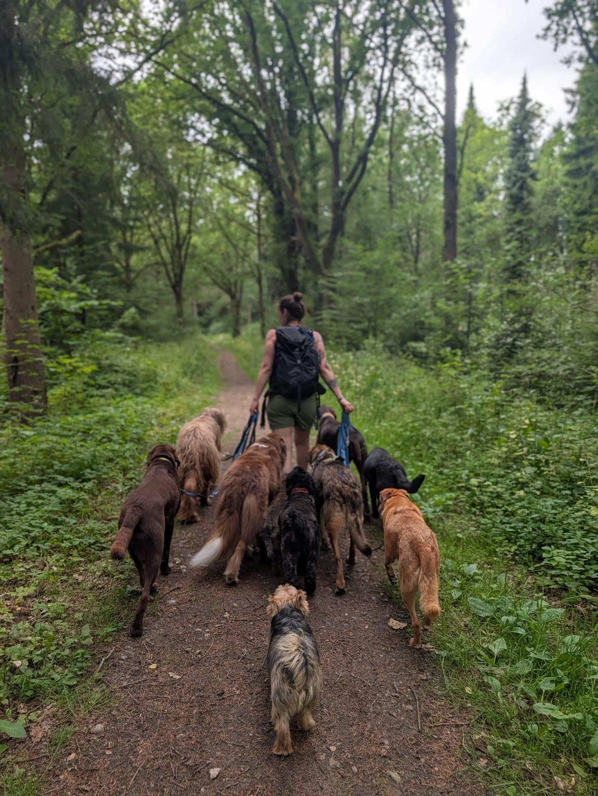
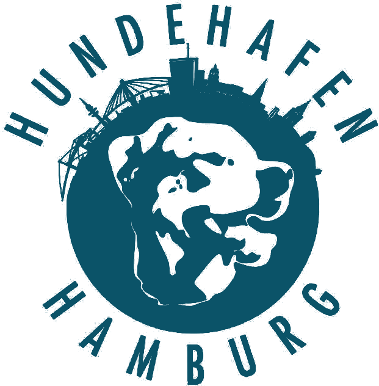
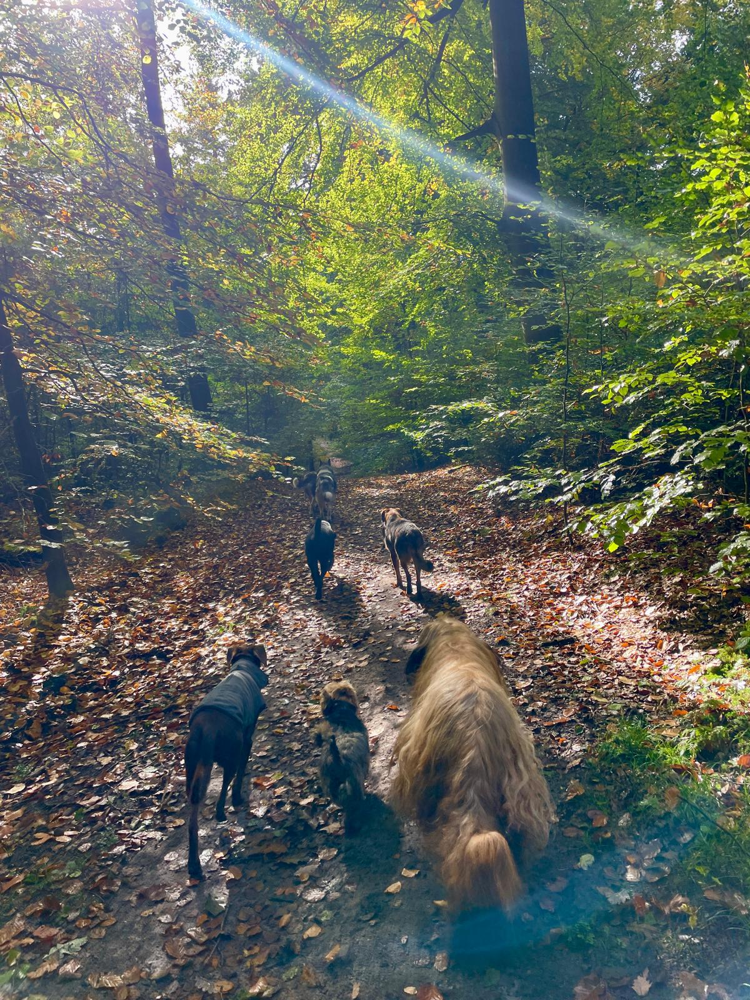
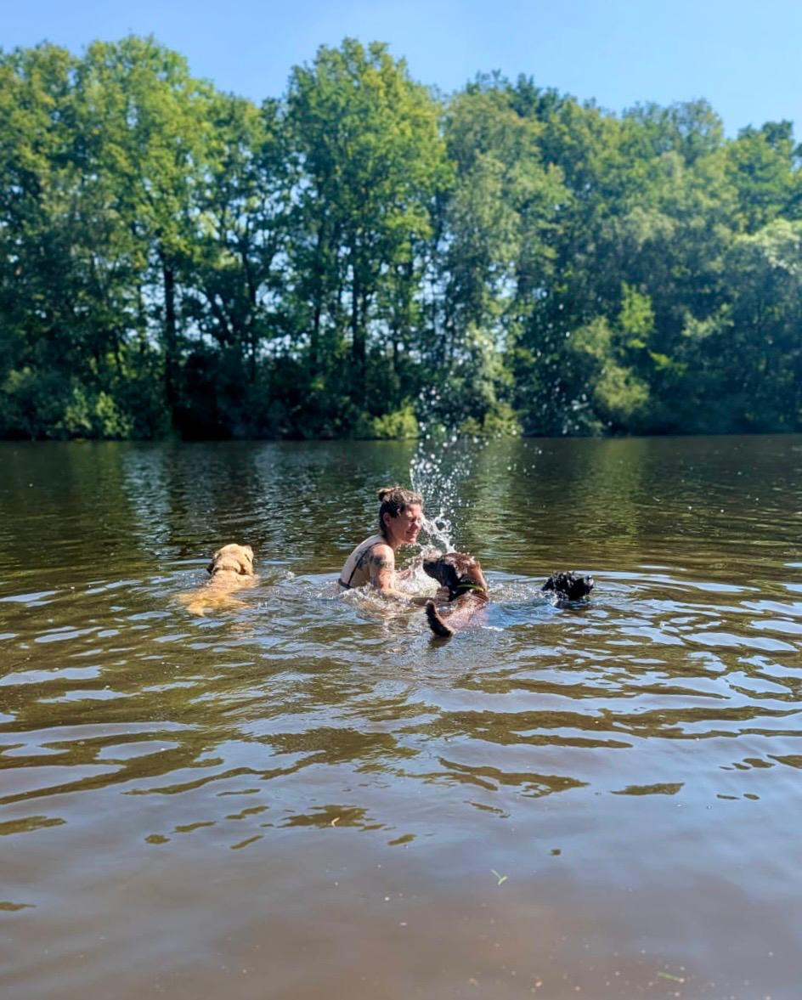
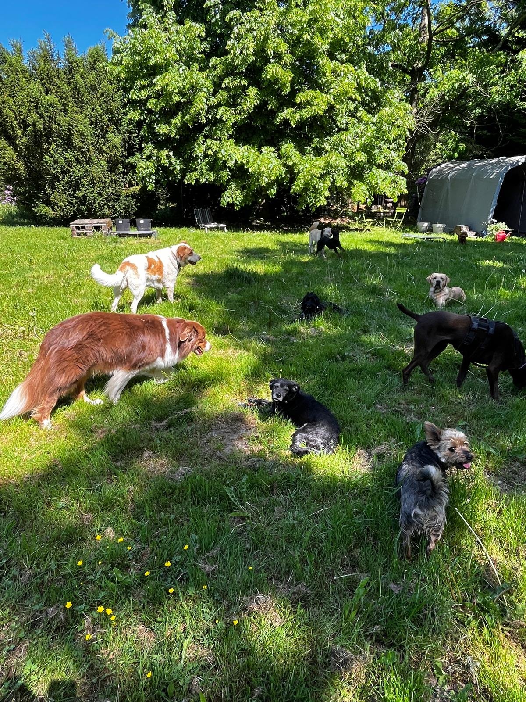
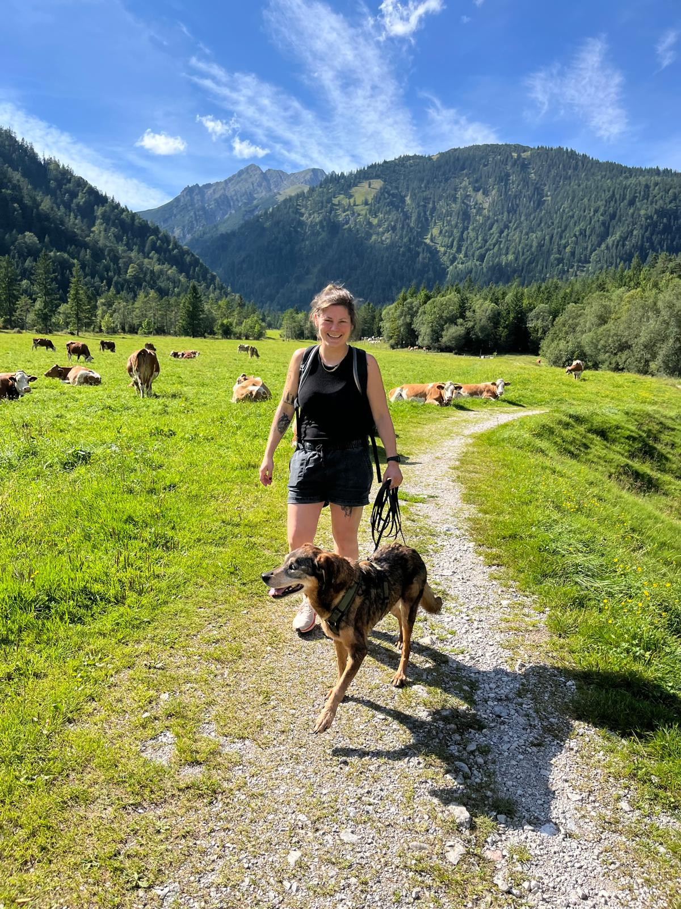
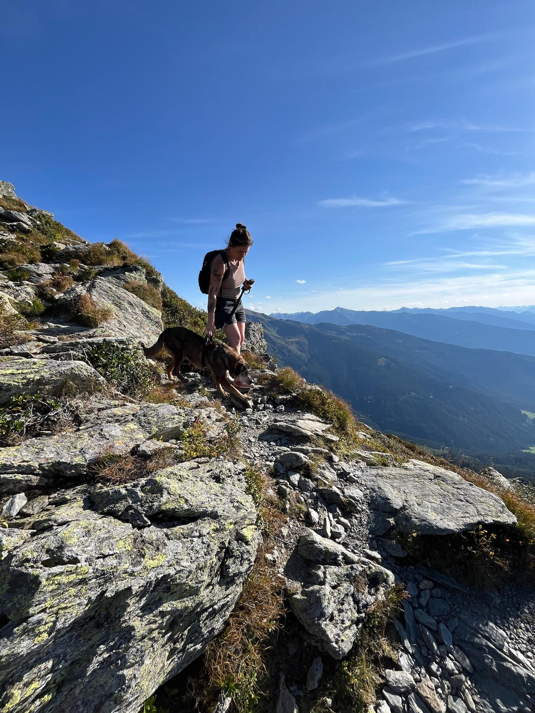

Beständige Hundegruppe
Eine vertraute Gruppe sorgt für Orientierung, Sicherheit und einen entspannten Tagesablauf.


Hundehafen Hamburg
Professionell. Persönlich. Zuverlässig.
Seit über elf Jahren betreue ich Hunde mit Erfahrung, Ruhe und einem Blick für ihre individuellen Bedürfnisse.
Kontakt aufnehmenBetreuung
Die Betreuung findet in einer beständigen Hundegruppe statt. Bewegung, Ruhe, Sozialkontakt und die individuellen Bedürfnisse jedes Hundes stehen dabei im Mittelpunkt.


Eine vertraute Gruppe sorgt für Orientierung, Sicherheit und einen entspannten Tagesablauf.


Ausgedehnte Spaziergänge an wechselnden Orten außerhalb Hamburgs bieten Bewegung und Abwechslung.

Mit Liegeplätzen, Bademöglichkeit sowie Schutz vor Wind und Wetter.
Krallenpflege, Medikamentengabe und zusätzliche Fütterung nach Absprache möglich.
Ablauf
Um die Fahrzeit im Auto möglichst kurz zu halten, arbeite ich mit Treffpunkten. Die Betreuung findet von Montag bis Donnerstag statt.
Lohmühlenstraße 1
Hallerplatz
Kosten
200 €pro Monat
320 €pro Monat
420 €pro Monat
520 €pro Monat
50 €pro Tag


Über mich
Ich bin Anneke, zertifizierte Hundetrainerin und seit über elf Jahren selbstständig in der Hundebetreuung und im Hundetraining tätig.
Mir ist es wichtig, dass sich jeder Hund sicher und gut aufgehoben fühlt. In meiner Arbeit halte ich mich daher nicht an starre Abläufe, sondern orientiere mich an Persönlichkeiten, Alter und Bedürfnissen der Hunde.
Kontakt aufnehmen →Kontaktaufnahme
Schreibe mir per E-Mail oder WhatsApp kurz, an welchen Tagen du Betreuung suchst und was deinen Hund ausmacht.
Du meldest dich per E-Mail oder WhatsApp.
Wir sprechen über deinen Hund, seine Gewohnheiten und Bedürfnisse.
Wenn es nach einem Probetag für alle passt, vereinbaren wir die Betreuungstage.